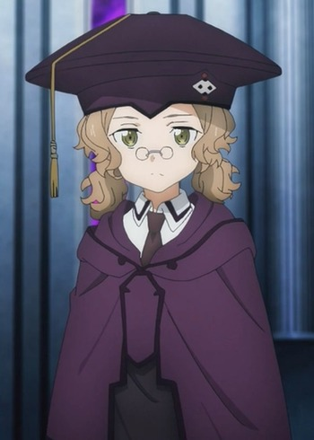
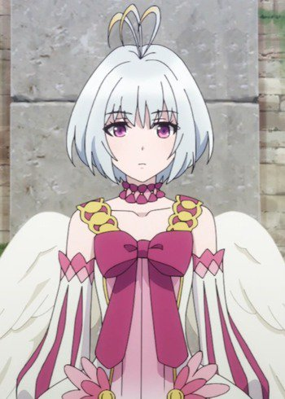
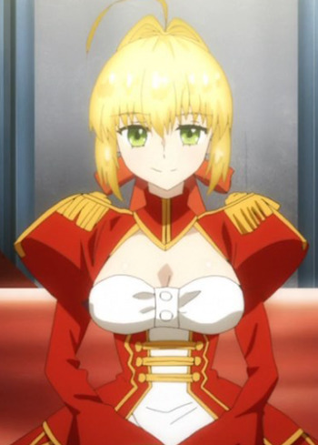

|  |
Cardinal |
- Sword Art Online: Alicization
- Sword Art Online: Alicization - Recollection
|
Cardinal is the embodiment of Cardinal System's error in Underworld. She has a somewhat elderly manner of speaking, but a cute voice befitting her appearance. |
|  |
Fitoria |
- The Rising of the Shield Hero
|
Fitoria is the queen of the Filolials, who rules over them all. Fitoria is serious about her work, but still has typical Filolial personality traits. She has lived for several centuries. She cares for the world's fate, but she's mostly indifferent to its inhabitants. Her goal is to protect this world and have the Legendary Heros not fight aganist each other. |
 |
Miharu Akiyama |
|
Miharu Akiyama is a young swordwoman who comes from a family of swordman. She is an expert of the Unrivalled Sword and better than most adults. Her mother is not supported of her dream. |
|  |
Saber |
- Carnival Phantasm
- Carnival Phantasm EX Season
- Fate/Extra Last Encore
- Fate/Extra Last Encore: Illustrias Geocentric Theory
|
Saber is a Saber-class that partnered with Hakuno Kishinami. She is vain, self-glorifying and pompous with a love for theater. Her real identify is Nero Claudius Caesar Augustus Germanicus, the Fifth Roman Emperor. She is notorious for being a tyrannical emperor, but a kindhearted individual who wanted what was best for her subjects. |
 |
Sakura Kinomoto |
- Cardcaptor Sakura
- Cardcaptor Sakura Movie 1
- Cardcaptor Sakura Movie 2: The Sealed Card
- Cardcaptor Sakura: Leave it to Kero-chan
- Cardcaptor Sakura: Clear Card Prologue
- Cardcapter Sakura: Clear Card
|
Sakura Kinomoto is an extremely and cheerful character. She is very athletic, being a member of the cheerleader squad and excellent runner. She often comes across as naive, clumsy and clueless, but she is perceptive, sweet and loyal. She is a Cardcaptor who is responsible for collecting the Clow Cards. |
 |
The Mirror |
|
The Mirror is one of 52 clow cards and one of the Earthly Cards. Mirror can be trouble but can be remorseful. |


.jpg)